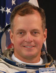

Lyndon B. Johnson Space Center
Houston, Texas 77058
|
National Aeronautics and Space Administration Lyndon B. Johnson Space Center Houston, Texas 77058 |
 |
Biographical Data |
||
Timothy J. (TJ) Creamer (COLONEL, U.S. ARMY, RET.)
NASA Astronaut
PERSONAL DATA: Born November 15, 1959, in Fort Huachuca, Arizona, but considers Upper Marlboro, Maryland, to be his home town. His interests include tennis, running, biking, reading, scuba diving, German language, Russian language and Information Technologies (IT). Both his mother, Mary E. Creamer, and his father, Edmund J. Creamer, Jr., are deceased.
EDUCATION: Bishop McNamara High School, Forestville, Maryland, 1978; Bachelor of Science, Chemistry, Loyola College, Baltimore, Maryland, 1982; Master of Science, Physics, Massachusetts Institute of Technology (MIT), 1992.
ORGANIZATIONS: Alpha Sigma Nu; Phi Kappa Phi; Sigma Pi Sigma; Army Aviation Association of America; Association of the United States Army and the British-American Project.
SPECIAL HONORS: Defense Superior Service Medal; Legion of Merit; Meritorious Service Medal (2nd Oak Leaf Cluster); Army Achievement Medal (1st Oak Leaf Cluster); Air Force Space and Missile Badge; National Defense Service Medal; Senior Army Aviator; Senior Parachutist; Distinguished Graduate of the U.S. Army Aviation School and recipient of the Russian Federation of Astronautics Yuri Gagarin medal and the Russian Medal of Merit for Space Exploration. Additionally, Master Army Aviator, Senior Parachutist and Jump Master.
EXPERIENCE: After Creamer graduated from Loyola College in May 1982, he was commissioned through the Reserve Officers' Training Corps (ROTC) program as a second lieutenant in the U.S. Army. He entered the U.S. Army Aviation School in December 1982, and was designated as an army aviator in August 1983, graduating as the Distinguished Graduate from his class. He was subsequently assigned to the 1st Armored Division as a section leader, platoon leader, flight operations officer and as a personnel staff officer for the 501st Attack Helicopter Battalion. In 1987, he was assigned to the 82nd Airborne Division as a commander of an air cavalry troop in the 17th Cavalry and later as the personnel officer of the 82nd Aviation Brigade. Following this assignment, he completed a Master of Science degree in physics at MIT in 1992 and was then assigned to the Department of Physics at the U.S. Military Academy as an assistant professor. Other military schools include Army Parachutist Course, Army Jumpmaster Course, the Combined Arms Services Staff School, and the Command and General Staff College. Prior to his astronaut selection in 1998, he had been working as a space operations officer with the Army Space Command stationed in Houston, Texas. He is now retired from the Army, but is still working with NASA.
NASA EXPERIENCE: Creamer was assigned to NASA’s Johnson Space Center in July 1995 as a space shuttle vehicle integration test engineer. His duties primarily involved serving as engineering liaison for launch and landing operations of the space shuttle. He was actively involved in the integrated tests of the systems for each orbiter in preparation for their ?the next flight and directly supported eight shuttle missions as a vehicle integration test team lead. Additionally, he focused his efforts in coordinating the Information Technologies for the Astronaut Office to aid personnel in their electronic communications, both at Johnson Space Center and during their travels to other centers.
Selected by NASA as an astronaut in June 1998, Creamer reported for astronaut candidate training in August 1998. Having completed the initial two years of intensive space shuttle and International Space Station (ISS) training, he was assigned technical duties in the Space Station branch of the Astronaut Office, where his primary focus involved the command and control computers on the space station, as well as the office automation support computers and the operational Local Area Network encompassing all International Partners and modules.
Beginning in November 2000, Creamer became the crew support astronaut for the Expedition 3 crew, which was on orbit from August 2001 through December 2001. He was the primary contact for all the crew needs, coordination, planning and interactions and was the primary representative of the crew while they were on orbit.
Starting in March 2002, Creamer headed the Hardware Integration section of the Space Station branch, where he was responsible for ensuring that all hardware configurations were properly integrated and that all operational aspects of the future space station hardware were accounted. In October 2004, he was assigned to be the Astronaut Office representative and coordinator for all things relating to on-orbit IT.
Creamer was next assigned to the Robotics branch, dealing with International Partners on all computer aspects of robotics operations as well as all command and control software and user interfaces. Additionally, he was the real-time support lead for Expedition 12 for all things involving robotics operations on the space station. He also served as a backup Expedition 19 crew member.
After Expeditions 22 and 23, Creamer returned his focus to on orbit IT, including networking, crew support platforms and targeting IT support for missions beyond low-Earth orbit, including Mars missions.
Creamer has also been certified as a payload operations director in Huntsville, Alabama, helping to coordinate real-time operations of all space station-based science events, making him the first flown astronaut to do so.
SPACEFLIGHT EXPERIENCE: Expedition 22/23 (December 21, 2009 through June 2, 2010). Creamer launched aboard the Soyuz TMA-17 crew capsule from the Baikonur Cosmodrome in Kazakhstan. Two days later, he docked with the International Space Station and joined the Expedition 22 crew. For the next 161 days, Creamer lived and worked aboard the space station as a flight engineer and NASA science officer. Creamer also has the distinction of connecting the onboard network to the Internet, via Twitter, by sending the first live tweet from orbit. The Expedition 23 crew returned to a safe landing in central Kazakhstan on June 2, 2010. In completing this long duration mission, Creamer logged a total of 163 days in space.
SOCIAL MEDIA: Twitter: https://twitter.com/Astro_TJ
JULY 2014